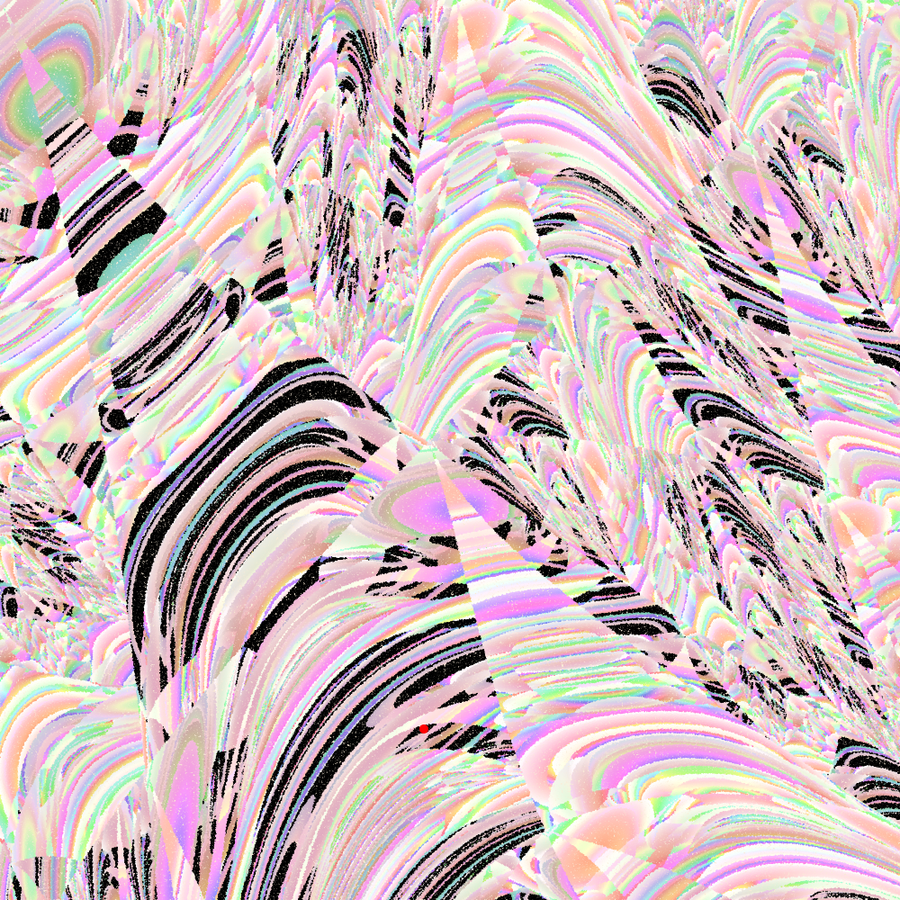
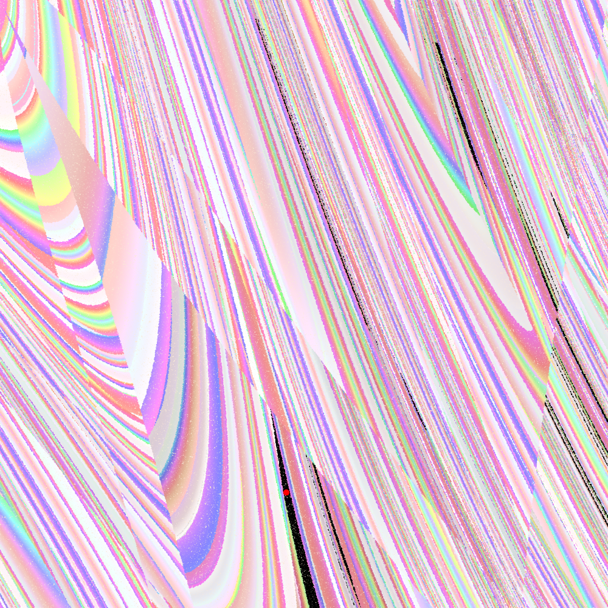

Bolas dinâmicas
A parte preta nas imagens abaixo é o conjunto dos pontos que ficam a menos de \(r\) de distância do ponto vermelho \(x\) (ele tá bem pequeno, mas está lá) durante toda a trajetória dos primeiros \(n-1\) iterados: a bola dinâmica \(B(x,n,r)\). Em outras palavras,
\[B(x,n,r)=\{y : d(f^i(x),f^i(y)) < r, \text{ para todo }\; i\in\{1,\dots,n-1\} \} \]Usamos essas bolas em uma das formas de definir a entropia topológica de uma dinâmica; se a dinâmica tem entropia topológica positiva, quando o \(n\) aumenta precisamos de cada vez mais bolas de raio \(r\) para cobrir uma parte do espaço: a dinâmica "gera informação" (a entropia) "evidenciando os detalhes" ao afastar os pontos uns dos outros, e assim as bolas dinâmicas tendem a perder pontos a cada iterado.



